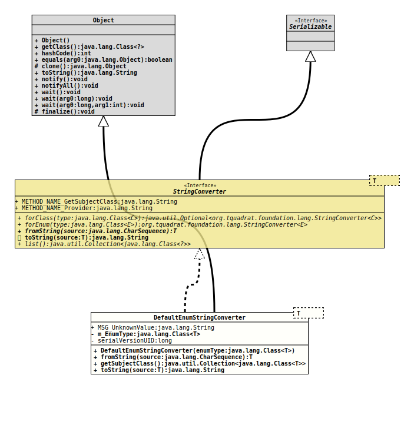

Module org.tquadrat.foundation.base
Class DefaultEnumStringConverter<T extends Enum<T>>
java.lang.Object
org.tquadrat.foundation.lang.internal.DefaultEnumStringConverter<T>
- Type Parameters:
T- The concrete data type that is handled by this string converter implementation.
- All Implemented Interfaces:
Serializable,StringConverter<T>
@ClassVersion(sourceVersion="$Id: DefaultEnumStringConverter.java 897 2021-04-06 21:34:01Z tquadrat $")
@API(status=INTERNAL,
since="0.1.0")
public class DefaultEnumStringConverter<T extends Enum<T>>
extends Object
implements StringConverter<T>
The default implementation of
The implementation of
The implementation of
StringConverter
for types that are derived from
Enum.The implementation of
fromString(CharSequence)
provided here uses
Class.getEnumConstants()
to find the enum value:
…
T result = stream( m_EnumType.getEnumConstants() )
.filter( constant -> value.equals( constant.name() ) )
.findFirst()
.orElseThrow( () -> new IllegalArgumentException( … );
…The implementation of
toString(Enum)
in this class will return the value of
Enum.name().- Author:
- Thomas Thrien (thomas.thrien@tquadrat.org)
- Version:
- $Id: DefaultEnumStringConverter.java 897 2021-04-06 21:34:01Z tquadrat $
- Since:
- 0.1.0
- See Also:
- UML Diagram
-

UML Diagram for "org.tquadrat.foundation.lang.internal.DefaultEnumStringConverter"
{kind=link}
-
Field Summary
FieldsModifier and TypeFieldDescriptionThe data type of the property to set.static final StringThe error message for the name of an unknown class on the command line: "Unknown/invalid value: %1$s".Fields inherited from interface org.tquadrat.foundation.lang.StringConverter
METHOD_NAME_GetSubjectClass, METHOD_NAME_Provider -
Constructor Summary
ConstructorsConstructorDescriptionDefaultEnumStringConverter(Class<T> enumType) Creates a newEnumValueHandlerinstance. -
Method Summary
Modifier and TypeMethodDescriptionfromString(CharSequence source) Converts the given String to an object instance.final Collection<Class<T>>Provides the subject class for this converter.Converts the given object instance to a String.
-
Field Details
-
MSG_UnknownValue
The error message for the name of an unknown class on the command line: "Unknown/invalid value: %1$s".- See Also:
-
m_EnumType
The data type of the property to set.
-
-
Constructor Details
-
DefaultEnumStringConverter
Creates a newEnumValueHandlerinstance.- Parameters:
enumType- The data type for the property.
-
-
Method Details
-
fromString
Converts the given String to an object instance.- Specified by:
fromStringin interfaceStringConverter<T extends Enum<T>>- Parameters:
source- The String representation for the object instance; can benull.- Returns:
- The resulting object instance; will be
nullifsourcewas alreadynull. - Throws:
IllegalArgumentException- The format of the given String is invalid and cannot be parsed into the object instance.
-
getSubjectClass
Provides the subject class for this converter.- Returns:
- The subject class.
-
toString
Converts the given object instance to a String.- Specified by:
toStringin interfaceStringConverter<T extends Enum<T>>- Parameters:
source- The object to convert; can benull.- Returns:
- The resulting String; will be
nullifsourcewas alreadynull.
-